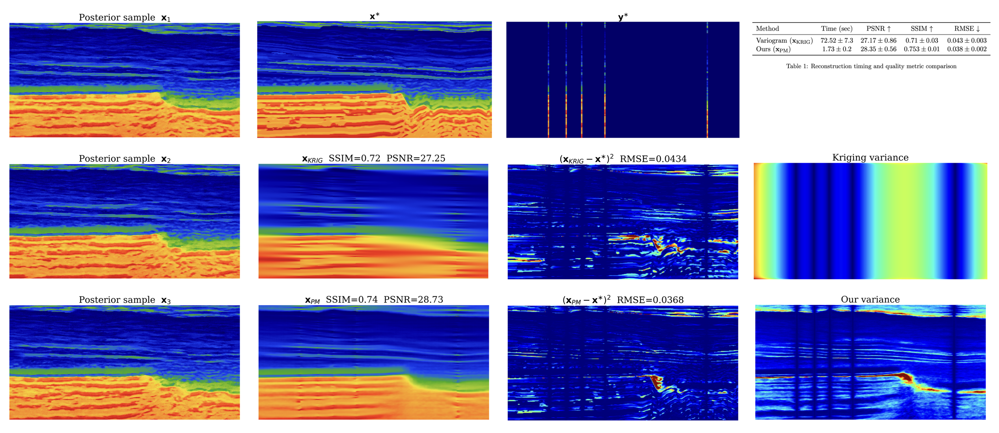

Generative Seismic Kriging with Normalizing Flows
empty
empty
\[ \newcommand{\pluseq}{\mathrel{+}=} \]
Image 2023 abstract
OBJECTIVES AND SCOPE (100 words)
The objective is to demonstrate Normalizing Flows for subsurface kriging from wells. We will show that after supervised training of our method, we can generate multiple realistic samples of plausible earth models that match the observed wells. We observe that these samples produce uncertainty statistics that are correlated with the error made by the method. Finally, we compare the speed and quality of our solutions with those obtained using a traditional variogram approach.
METHODS, PROCEDURES, PROCESS (250 words)
Kriging is highly ill-posed (there is no unique solution) so the preferred method should be able to produce many models that match the well logs. Generative deep learning can be used to sample models that are conditioned on observations. A particular class of generative deep learning are normalizing flows. These are particularly attractive because they are fast to sample from and their low training memory requirements. We implemented an architecture in Julia with InvertibleNetworks.jl.
Our method is supervised so needs training examples of observed wells y where the corresponding earth models x. We use the compass model with a 90%/5%/5% training/validation/test split. For each training slice (nz=256, nx=512, d=10m) of the compass volume, we randomly generate well observations by selecting 5 columns at least 200 meters distance between each. This process creates the training pairs (x_i,y_i) used to train the conditional normalizing flow.
After training, we input an unseen well log y and produce samples of the posterior p(x|y). To create single point estimate, we average all posterior samples to get the posterior mean.
For the variogram, we use exponential ordinary variogram from the package PyKrige. The variogram parameters are automatically selected by the well log data. We manually set the anisotropy angle to 0 to match the strongly horizontal Compass model.
RESULTS, OBSERVATIONS, CONCLUSIONS (250 words)
In Figure 2, we show posterior samples from our method where each sample takes 10ms to compute. To validate the quality of the earth models produced by our method, we compare the posterior mean with known ground truth models from a leave-out test set. We compare various metrics (SSIM PSNR RSME) and time-to-compute and verify that our method produces higher quality reconstructions while being faster than a variogram approach.
We also look at the uncertainty of our approach by looking at the intrasample variation between the posterior samples. We plot these and compare with the calculated standard variation of the variogram. Compared against the variograms variance our method produces uncertainty results that are more interpretable and correlate with errors made in specific structures.
The table in Figure 2 shows the quantitative performance of our method, in summary, our method takes less than 2 seconds to produce a high quality point estimates with average RMSE of 0.038 compared to the variogram with average RMSE of 0.043. The posterior mean will give less error on average, but the earth models are smoothed thus for downstream tasks, we recommend practitioners use posterior samples as they maintain realistic earth characteristics. We conclude that our method is a promising option for creating realistic earth models that match observed data wells and that it offers quantitative advantages over traditional approaches.
SIGNIFICANCE/NOVELTY (100 words)
We introduce the first use of conditional normalizing flows for kriging. While previous implementations of conditional normalizing flows have struggled on high dimensional images, we have demonstrated that our software implementation allows for learning distributions over large images. This method is set to scale to 3D image volumes in future work which will further enable the application of these methods to realistic seismic problems. In contrast with traditional variogram methods, our framework produces realistic samples, that is particularly important for downstream tasks in reservoir engineering and other applications where multiple plausible models are needed.

